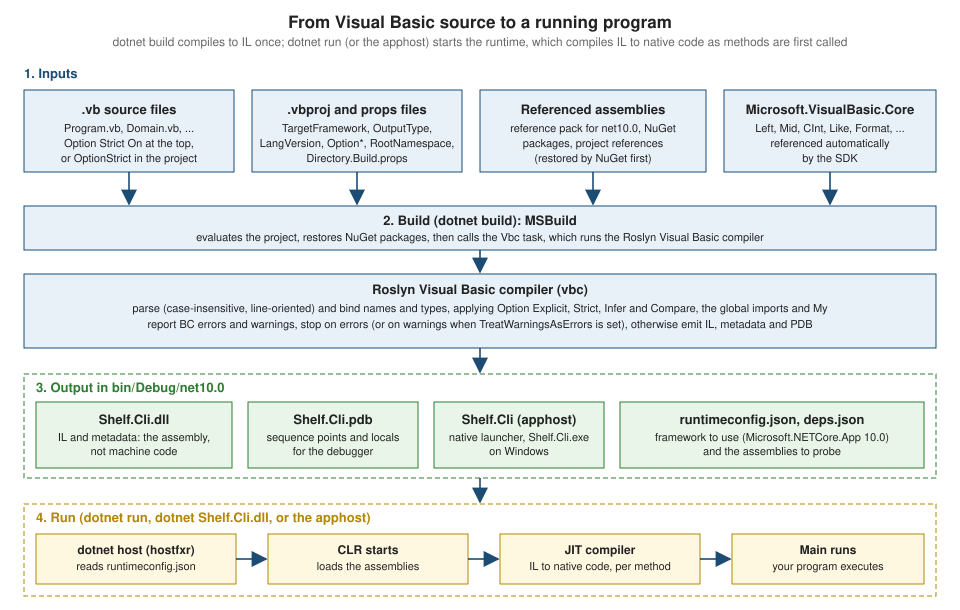

Getting Started
|
This content was generated with the assistance of AI and should be verified against the official documentation before being relied on in production. |
This page is written against Visual Basic 17.13 on .NET 10 (LTS) with the .NET SDK 10.0.402 and Visual Studio 2026, and was checked on 2026-10-19. .NET 11 was still a release candidate on that date and is treated as upcoming. Every Visual Basic program on the page was built and run with the official mcr.microsoft.com/dotnet/sdk:10.0 container image, with Option Strict On and warnings treated as errors, and the output shown is the real output. The Windows Forms example needs Windows to run, so it was only built. This is the first stop of the reference: it gets a working toolchain, explains how a .vb file becomes a running program, builds the first pieces of the running shelf scenario (a library-catalogue solution that every later page extends), and shows how to read what the compiler and the runtime tell you. The language itself starts on Program Structure and Code Conventions; what Visual Basic can and cannot build on .NET 10 is on Visual Basic and .NET.
Visual Basic (VB) is a statically typed, object-oriented language that compiles to the same intermediate language (IL) as C# and runs on the same runtime. Since 2020 Microsoft has treated it as a stable language: it is supported, it keeps working with new .NET releases, and it receives no new syntax of its own (the details are on History, Versions and Language Strategy). A tool, a library or a Windows desktop application written in VB today is an ordinary .NET project, built with the ordinary dotnet command line.
What you need
| Tool | What it gives you for Visual Basic | Notes |
|---|---|---|
.NET SDK 10 |
The |
Free. Everything on this reference can be built with the SDK alone. Check the installed SDKs with |
Visual Studio 2026 (Community, Professional or Enterprise) |
The full VB experience: project and item templates, IntelliSense, refactorings, code fixes, the Windows Forms and WPF designers, the debugger, Hot Reload, the test explorer, profilers |
Windows only. The Community edition is free for individuals and small teams under Microsoft’s license terms. The “.NET desktop development” workload is the one that matters for VB. |
Visual Studio Code |
Syntax highlighting for |
There is no Visual Basic language server: the built-in |
Any text editor plus a terminal |
|
Enough for everything on this page. |
For a list of IDEs and editors with links to their official pages, see IDEs & Tools.
The practical consequence of the last two rows is that a Visual Basic developer who wants editor help works in Visual Studio on Windows. The command line is identical everywhere, so a build server, a container image, a Linux or macOS machine or a CI job can build and test a VB solution without any IDE. What cannot be built or run off Windows is the Windows-only part of the platform: Windows Forms, WPF, COM and the My.Computer devices. A Linux or macOS machine can still compile Windows Forms and WPF projects when the project sets EnableWindowsTargeting to true, which is how the examples of this reference that target Windows were checked.
Installing the .NET 10 SDK
| System | Install |
|---|---|
Windows |
|
macOS |
The installer package from the download page or the package manager of your choice. WinForms and WPF projects can be compiled with |
Linux |
The distribution’s package manager (Microsoft’s install pages list the package names per distribution) or the install script, or the official container image |
Source: Install .NET, Install .NET on Windows
Verify the installation. These are the real outputs of the container used for the examples.
dotnet --version
dotnet --list-sdks10.0.402
10.0.402 [/usr/share/dotnet/sdk]Source: dotnet command
When several SDKs are installed, the dotnet command uses the newest one unless a global.json file in the current or a parent directory pins another (global.json overview). A solution that is meant to build identically on every machine usually carries one next to its Shelf.slnx. Which Visual Basic language version you get is decided by the compiler inside the SDK, not by the target framework: an SDK that ships VB 17.13 compiles a net8.0 project with the same language level. The LangVersion property can lower it, as described on History, Versions and Language Strategy.
Installing Visual Studio 2026 for Visual Basic
Run the Visual Studio installer and tick the ".NET desktop development" workload (component id Microsoft.VisualStudio.Workload.ManagedDesktop). That workload contains the Visual Basic compiler and templates, the Windows Forms and WPF designers and the .NET SDK. It can also be added later with the Visual Studio Installer’s Modify command or from the command line with the --add switch of the installer.
What Visual Studio adds to a Visual Basic developer, beyond the SDK:
-
Project and item templates. New Project offers "Console App", "Class Library", "Windows Forms App", "WPF Application" and the test projects with Visual Basic as the language filter. The command-line templates are listed below; the dialog and the command line use the same template engine.
-
The Visual Basic editor features. IntelliSense with the VB keyword and
Mycompletion, the background compiler that underlines BC errors as you type, refactorings and code fixes, automatic line-continuation handling, and the pretty lister that corrects keyword case and indentation on every Enter. Visual Basic is case-insensitive, and the editor normalizes identifier case to the declaration, which is whyConsole.WriteLine,console.writelineandCONSOLE.WRITELINEcompile identically and the editor shows the first form. -
Designers. A drag-and-drop designer for Windows Forms and a XAML designer for WPF, which write the generated partial class for you (shown at the end of this page).
-
Debugging. Breakpoints, watches, Edit and Continue and Hot Reload work for Visual Basic projects on .NET 6 and later.
-
Test Explorer, coverage and profilers, covered on Testing and Debugging and Diagnostics.
Two points in the editor are worth setting up once, before the first project. Open Tools, Options, Projects and Solutions, VB Defaults and check that Option Strict is On (the page on Option Statements explains why the default is Off, and why you want to override it), and that Option Explicit and Option Infer are On. These settings only affect projects created from the dialog; the project file and the first line of each source file win over them.
Visual Studio Code and other editors
Visual Studio Code ships a built-in vb extension that provides a TextMate grammar (syntax colors), a few code snippets and a language configuration (brackets, comment markers), and nothing else. There is no language server for Visual Basic, and the Microsoft C# Dev Kit works on C# projects only. In practice this means:
-
No completion list, no go-to-definition, no rename and no diagnostics in the editor. Mistakes are found by running
dotnet buildin the terminal and reading the BC errors, as in the section on diagnostics below. -
No debugger integration for Visual Basic. A terminal-only workflow can use
Console.WriteLine,Debug.WriteLineand the Visual Studio debugger on a Windows machine when needed. -
Everything that is a command works:
dotnet new,dotnet build,dotnet run,dotnet test,dotnet watch,dotnet formatand NuGet restore.
Use Visual Studio when you write a lot of Visual Basic, Visual Studio Code or a plain editor for reading, small edits and CI work. Third-party IDEs may add their own VB support; this reference does not rely on any of them.
"Hello, world!"
A Visual Basic console program is a Module with a Sub Main. There is no class around it and no static keyword: a Module is a type whose members are all implicitly shared, which is exactly what the entry point needs.
Option Strict On
Module Program
Sub Main()
Console.WriteLine("Hello, world!")
End Sub
End ModuleHello, world!Reading the program line by line:
-
Option Strict Onis a file-level compiler option that must be the first statement of the file. It turns off the implicit conversions and late binding that Visual Basic still allows by default. Every example in this reference starts with it; the reason and the otherOptionstatements are on Option Statements. -
Module Program ... End Moduledeclares the module. Its name is up to you;Programis the convention of the templates. A project may contain several modules and the compiler needs to know whichMainto call: when exactly oneSub MainorFunction Mainis found, it is the entry point. -
Sub Main()is the entry point. It may takeargs As String()to receive the command-line arguments, and it may be aFunction Main(...) As Integerthat returns the process exit code.Mainis not case-sensitive, like everything else. -
Consoleneeds noImports System: the SDK adds global imports forMicrosoft.VisualBasic,System,System.Collections,System.Collections.Generic,System.Diagnostics,System.Linq,System.Threading.TasksandSystem.Xml.Linqto every VB project. TheImportsstatement of the generated template is therefore redundant but harmless. -
Blocks are closed by
Endplus the keyword (End Sub,End Module,End If). There are no braces and no semicolons, and a statement ends at the end of the line.
A program that returns an exit code and reads its arguments uses Function Main. The next program also shows where the runtime pieces come from.
Option Strict On
Imports System.Reflection
Imports System.Runtime.InteropServices
Module Program
Function Main(args As String()) As Integer
Dim vbRuntime As String = GetType(Microsoft.VisualBasic.Constants).Assembly.GetName().Name
Console.WriteLine($"Framework : {RuntimeInformation.FrameworkDescription}")
Console.WriteLine($"Entry : {Assembly.GetEntryAssembly().GetName().Name}")
Console.WriteLine($"VB runtime: {vbRuntime}")
Console.WriteLine($"Arguments : {args.Length}")
Return 0
End Function
End ModuleRun with dotnet run — a b (the -- separates the arguments of dotnet run from those of the program):
Framework : .NET 10.0.13
Entry : hello2
VB runtime: Microsoft.VisualBasic.Core
Arguments : 2The Visual Basic runtime library (Microsoft.VisualBasic.Core, with the Windows Forms part in Microsoft.VisualBasic.Forms) is the assembly that holds Left, Mid, CInt, Format, MsgBox, the Like operator helpers and the My support. It ships with .NET and is referenced automatically. The assembly name hello2 above is simply the name of the project file in the scratch directory.
There are no top-level statements
C# 9 allows statements directly in the file. Visual Basic does not, and the compiler says so:
Option Strict On
Console.WriteLine("Hello, world!")/w/Program.vb(3,1): error BC30689: Statement cannot appear outside of a method body.The cure is the Module and Sub Main above. Visual Basic also has no Async Main: an asynchronous program starts in a Sub Main that waits for the task, as shown on Async and Await.
Creating a console project
The same project can be created in Visual Studio (File, New, Project, "Console App" with the language set to Visual Basic) or with one command. The command is what the rest of this reference uses, and Shelf.Cli is the name of the console front of the shelf scenario.
dotnet new console -lang VB -o Shelf.CliThe -lang VB switch matters. Without it dotnet new creates a C# project, because C# is the default language of every template. The templates that exist for Visual Basic on the SDK used here are:
Template Name Short Name Language Tags
----------------------------- ------------------- -------- -----------------------
Class Library classlib C#,F#,VB Common/Library
Console App console C#,F#,VB Common/Console
MSTest Test Class mstest-class C#,F#,VB Test/MSTest
MSTest Test Project mstest C#,F#,VB Test/MSTest/Desktop/Web
NUnit Test Item nunit-test C#,F#,VB Test/NUnit
NUnit Test Project nunit C#,F#,VB Test/NUnit/Desktop/Web
Windows Forms App winforms C#,VB Common/WinForms
Windows Forms Class Library winformslib C#,VB Common/WinForms
Windows Forms Control Library winformscontrollib C#,VB Common/WinForms
WPF Application wpf C#,VB Common/WPF
WPF Class Library wpflib C#,VB Common/WPF
WPF Custom Control Library wpfcustomcontrollib C#,VB Common/WPF
WPF User Control Library wpfusercontrollib C#,VB Common/WPF
xUnit Test Project xunit C#,F#,VB Test/xUnit/Desktop/WebThat list is the output of dotnet new list --language VB. Two things stand out. There is no VB template for a worker service, a web API, an MVC or Razor application, Blazor, gRPC or .NET MAUI: those workloads are not available to Visual Basic (the app-model table on Visual Basic and .NET explains the options, which are a Visual Basic class library hosted from a C# application, or hand-written code). And the "Console App (.NET Framework)", "Windows Forms App (.NET Framework)" and "Blank App (UWP)" templates that older Visual Studio offered are not part of the SDK templates: they belong to .NET Framework 4.8.1 projects, which Visual Studio still supports for maintenance.
The generated files
The command creates a folder with two files, plus the obj folder that the first restore adds.
Imports System
Module Program
Sub Main(args As String())
Console.WriteLine("Hello World!")
End Sub
End Module<Project Sdk="Microsoft.NET.Sdk">
<PropertyGroup>
<OutputType>Exe</OutputType>
<RootNamespace>Shelf.Cli</RootNamespace>
<TargetFramework>net10.0</TargetFramework>
</PropertyGroup>
</Project>These are the files exactly as the template wrote them. Notice what they do not contain: there is no Option Strict On in the source and no OptionStrict in the project. A freshly generated Visual Basic project therefore compiles with Option Strict Off, which allows the implicit narrowing conversions and the late binding that the rest of this reference teaches you to avoid. The first thing to do with the template is to switch the option on in the project file:
<Project Sdk="Microsoft.NET.Sdk">
<PropertyGroup>
<OutputType>Exe</OutputType>
<RootNamespace>Shelf.Cli</RootNamespace>
<TargetFramework>net10.0</TargetFramework>
<OptionStrict>On</OptionStrict>
<TreatWarningsAsErrors>true</TreatWarningsAsErrors>
</PropertyGroup>
</Project>The SDK’s own defaults for the Visual Basic properties, read back with MSBuild on the SDK used here, are OptionExplicit On, OptionInfer On, OptionStrict Off and OptionCompare Binary. A section of a solution can set them once for every project in a Directory.Build.props file at the solution root, and that is what the shelf solution does:
<Project>
<PropertyGroup>
<TargetFramework>net10.0</TargetFramework>
<OptionExplicit>On</OptionExplicit>
<OptionStrict>On</OptionStrict>
<OptionInfer>On</OptionInfer>
<TreatWarningsAsErrors>true</TreatWarningsAsErrors>
</PropertyGroup>
</Project>Every property of the project file, and every Visual Basic compiler option behind it, is covered on Projects, MSBuild and the dotnet CLI. Three properties deserve a word here.
RootNamespace-
The namespace that the compiler puts around every type of the project, in addition to any
Namespaceblock in the file. This is a Visual Basic-specific rule and the source of a classic first-day surprise: if the project’sRootNamespaceisShelf.Coreand a file declaresNamespace Shelf.Core, the type ends up inShelf.Core.Shelf.Core. The shelf solution therefore writes noNamespaceblock for its top-level types and lets the root namespace do the job. C# has no such property and always uses the namespace written in the file. TargetFramework-
net10.0runs on every platform.net10.0-windowsadds the Windows-only APIs (Windows Forms, WPF, and the Windows registry and COM types).net481targets the last .NET Framework. The moniker table is on Visual Basic and .NET. OutputType-
Exefor a console program,WinExefor a graphical one (no console window),Library(the default) for a class library.
Build, run and the output folder
dotnet run --project Shelf.Cli
dotnet build Shelf.CliHello World!
All projects are up-to-date for restore.
Shelf.Cli -> /w/Shelf.Cli/bin/Debug/net10.0/Shelf.Cli.dll
Build succeeded.
0 Warning(s)
0 Error(s)
Time Elapsed 00:00:00.43The folder bin/Debug/net10.0 then contains Shelf.Cli.dll (the IL assembly), Shelf.Cli.pdb (debug symbols), Shelf.Cli.runtimeconfig.json and Shelf.Cli.deps.json (how the host finds the framework and the dependencies) and, on Windows, the launcher Shelf.Cli.exe (on Linux and macOS a launcher without extension). dotnet run builds first when the sources changed, so dotnet build is only needed when you want the build without running.
Source: dotnet build
How a build turns .vb files into a program
The figure follows one project from source to a running process. The key points are that Visual Basic is compiled ahead of time to IL, not to machine code, and that the same runtime that executes C# executes the result.

Step by step:
-
Restore. NuGet resolves the package references and the reference assemblies of the target framework into
obj/project.assets.json. This is the step that needs the network the first time. -
Evaluate. MSBuild reads the
.vbprojand every props and targets file it imports, starting withMicrosoft.NET.SdkandDirectory.Build.props. The Visual Basic parts of the SDK add the global imports listed earlier, theOptionproperties, the defaultDefineConstants(CONFIG,DEBUG,TRACE,PLATFORM) and the reference toMicrosoft.VisualBasic.Core. -
Compile. The
Vbctask of MSBuild runs the Roslyn Visual Basic compiler, thevbc.dllthat ships inside the SDK folder (Roslyn/bincore), often through the shared compiler serverVBCSCompilerthat stays alive between builds to make them faster. The compiler parses the sources, binds every name and type (enforcingOption Explicit,Option Strictand the others), reports BC errors and warnings, and emits the assembly. -
Output. The assembly (
.dll, or.exe-style launcher plus.dll) contains IL and metadata. The.pdbmaps IL back to source lines. The runtime configuration files are small JSON documents. -
Run.
dotnet run,dotnet Shelf.Cli.dlland the apphost all do the same: the host (hostfxr) readsruntimeconfig.json, findsMicrosoft.NETCore.App10.0, starts the Common Language Runtime and calls the entry point. Methods are compiled from IL to native code by the JIT compiler the first time they run.
Because the compiler is the same Roslyn platform as C#'s, an assembly built from Visual Basic is indistinguishable at run time from one built from C#: another .NET language can reference it and call it, and the reverse is true (see Interop with C# and Other .NET Languages).
The shelf scenario starts here
From this point every page of the reference uses the same small solution, Shelf.slnx: a library catalogue of books and magazines, with a console front (Shelf.Cli), data access (Shelf.Data), Windows Forms and WPF fronts, tests and a tiny legacy corner. The first brick is a function that checks an ISBN-13: thirteen digits, with hyphens allowed, whose check digit makes the weighted sum a multiple of ten (digits at even positions count once, at odd positions three times).
The library lives in Shelf.Core, which is a class library. A class library has no entry point, so the code is a Module of shared functions, the Visual Basic counterpart of a C# static class.
Option Strict On
Public Module IsbnChecker
''' <summary>Returns True when text is a valid ISBN-13 (hyphens allowed).</summary>
Public Function IsValid(text As String) As Boolean
Dim digits As New List(Of Integer)
For Each ch As Char In text
If Char.IsDigit(ch) Then
digits.Add(AscW(ch) - AscW("0"c))
ElseIf ch <> "-"c Then
Return False
End If
Next
If digits.Count <> 13 Then
Return False
End If
Dim sum As Integer = 0
For i As Integer = 0 To 12
sum += If(i Mod 2 = 0, digits(i), digits(i) * 3)
Next
Return sum Mod 10 = 0
End Function
End ModuleA few Visual Basic features appear in those twenty lines and are explained on their own pages: If(a, b, c) is the conditional operator (Operators and Expressions), For i As Integer = 0 To 12 has an inclusive upper bound, Mod is the remainder operator, AscW converts a character to its UTF-16 code, and ''' starts an XML documentation comment (XML Documentation, Analyzers and Code Style). The console front calls it:
Option Strict On
Imports Shelf.Core
Module Program
Function Main(args As String()) As Integer
If args.Length = 0 Then
Console.Error.WriteLine("usage: Shelf.Cli <isbn> [<isbn> ...]")
Return 2
End If
Dim invalid As Integer = 0
For Each text As String In args
Dim ok As Boolean = IsbnChecker.IsValid(text)
Console.WriteLine($"{text,-18} {If(ok, "valid", "invalid")}")
If Not ok Then
invalid += 1
End If
Next
Return If(invalid = 0, 0, 1)
End Function
End Moduledotnet run --project Shelf.Cli — 978-0-306-40615-7 978-0-306-40615-8 abc printed the following, and the process exit code was 1 because two of the three arguments were invalid. Run without arguments, the program printed its usage line on the error stream and exited with code 2.
978-0-306-40615-7 valid
978-0-306-40615-8 invalid
abc invalidImports Shelf.Core makes the types in the root namespace of the library visible. The reference from Shelf.Cli to Shelf.Core is a project reference, added in the next section.
A class library, a test project and a solution
A solution groups projects so that one command builds them all. Since .NET 10 dotnet new sln creates the XML-based .slnx format (the older .sln format is still supported). The commands below create the three projects of this page, put them in a solution and connect them. Each line is followed by the message the SDK printed.
dotnet new sln -n Shelf
dotnet new console -lang VB -o Shelf.Cli
dotnet new classlib -lang VB -o Shelf.Core
dotnet new mstest -lang VB -o Shelf.Tests
dotnet sln add Shelf.Cli Shelf.Core Shelf.Tests
dotnet add Shelf.Cli reference Shelf.Core
dotnet add Shelf.Tests reference Shelf.CoreThe template "Solution File" was created successfully.
The template "Console App" was created successfully.
The template "Class Library" was created successfully.
The template "MSTest Test Project" was created successfully.
Project `Shelf.Cli/Shelf.Cli.vbproj` added to the solution.
Project `Shelf.Core/Shelf.Core.vbproj` added to the solution.
Project `Shelf.Tests/Shelf.Tests.vbproj` added to the solution.
Reference `..\Shelf.Core\Shelf.Core.vbproj` added to the project.
Reference `..\Shelf.Core\Shelf.Core.vbproj` added to the project.The resulting solution file is this small XML document, and the reference commands added a ProjectReference item to the .vbproj of the console and the test project:
<Solution>
<Project Path="Shelf.Cli/Shelf.Cli.vbproj" />
<Project Path="Shelf.Core/Shelf.Core.vbproj" />
<Project Path="Shelf.Tests/Shelf.Tests.vbproj" />
</Solution><ItemGroup>
<ProjectReference Include="..\Shelf.Core\Shelf.Core.vbproj" />
</ItemGroup>Source: dotnet sln, dotnet add reference
The class library project is the smallest possible one: a RootNamespace and a TargetFramework, no OutputType (the default is Library), and a Class1.vb that the template creates and that the page replaces by IsbnChecker.vb. The test project created by the MSTest template references the MSTest NuGet package and, in the template used here, sets LangVersion to latest and the properties ImplicitUsings and Nullable to enable. Neither property does anything for Visual Basic: VB has no nullable reference types (see Nothing and Nullable Value Types), and a console project with ImplicitUsings enabled still could not see HttpClient without Imports System.Net.Http (BC30002). The global imports of a VB project are the fixed list given earlier, not the C# implicit usings. The template also adds a settings file with an assembly-level Parallelize attribute that tells MSTest to run test methods in parallel. A first test for the ISBN checker, with Option Strict On and the references to the library:
Option Strict On
Imports Microsoft.VisualStudio.TestTools.UnitTesting
Imports Shelf.Core
<TestClass>
Public Class IsbnCheckerTests
<TestMethod>
Public Sub AcceptsValidIsbn13WithHyphens()
Assert.IsTrue(IsbnChecker.IsValid("978-0-306-40615-7"))
End Sub
<TestMethod>
Public Sub RejectsWrongCheckDigit()
Assert.IsFalse(IsbnChecker.IsValid("978-0-306-40615-8"))
End Sub
End ClassWith OptionStrict On and TreatWarningsAsErrors set in the three projects, dotnet build Shelf.slnx and the test run gave:
Shelf.Core -> /w/Shelf.Core/bin/Debug/net10.0/Shelf.Core.dll
Shelf.Cli -> /w/Shelf.Cli/bin/Debug/net10.0/Shelf.Cli.dll
Shelf.Tests -> /w/Shelf.Tests/bin/Debug/net10.0/Shelf.Tests.dll
Build succeeded.
0 Warning(s)
0 Error(s)
Passed! - Failed: 0, Passed: 2, Skipped: 0, Total: 2, Duration: 9 ms - Shelf.Tests.dll (net10.0)The test command is dotnet test Shelf.Tests (a project) or dotnet test from a folder that has one project or solution. The shelf reference has the same tests in MSTest, xUnit and NUnit variants, compared on Testing. A new test project of a solution is a good habit even for a toy: it is the quickest way to run a function without a Main.
Opening Shelf.slnx in Visual Studio 2026 loads the three projects, and the same build, run and test commands exist as menu items. Pressing F5 starts the startup project under the debugger, as described below.
A first Windows Forms form
The shelf has a desktop front, Shelf.Desktop. Creating the project is another template:
dotnet new winforms -lang VB -o Shelf.DesktopThe template writes a project with OutputType WinExe, the target framework net10.0-windows, UseWindowsForms set to true, a Program.vb with a Sub Main that starts the application on the first form, and a form split in two files: Form1.vb for your code and Form1.Designer.vb for the code the designer writes. This split is the Visual Basic Partial Class mechanism, covered on Classes and Objects. The designer file declares the controls as Friend WithEvents fields and creates them in InitializeComponent; your file contains the event handlers, bound with the Handles clause.
Option Strict On
Public Class Form1
Private Sub GreetButton_Click(sender As Object, e As EventArgs) Handles GreetButton.Click
MessageLabel.Text = "Hello, world!"
End Sub
End ClassThe relevant lines of the designer file for that form are these:
Friend WithEvents GreetButton As Button
Friend WithEvents MessageLabel As Label
Private Sub InitializeComponent()
components = New System.ComponentModel.Container()
GreetButton = New Button()
MessageLabel = New Label()
SuspendLayout()
GreetButton.Location = New Point(24, 24)
GreetButton.Name = "GreetButton"
GreetButton.Size = New Size(120, 32)
GreetButton.Text = "Greet"
MessageLabel.AutoSize = True
MessageLabel.Location = New Point(24, 72)
MessageLabel.Name = "MessageLabel"
AutoScaleMode = AutoScaleMode.Font
ClientSize = New Size(320, 120)
Controls.Add(GreetButton)
Controls.Add(MessageLabel)
Text = "Shelf"
ResumeLayout(False)
PerformLayout()
End SubBuilt, not run: the form needs Windows to display. The project built on the Linux container with -p:EnableWindowsTargeting=true (set in the project) and gave Build succeeded with no warnings. The Handles GreetButton.Click clause is what connects the button to the method; compare it with the AddHandler statement and with C#'s += on Events and Handlers, and see Windows Forms Applications for the full application, including the Visual Basic Application Framework and My.Application.
Reading compiler diagnostics
Every message from the Visual Basic compiler has the form file(line,column): severity code: text, where the code is BC followed by a number (BC means Basic Compiler). Errors stop the build, warnings do not unless TreatWarningsAsErrors is set. The following small file has five different mistakes, and the compiler’s five messages, copied from the build, show how much they say.
Option Strict On
Module Program
Function Triple(n As Integer) As Integer
Return n * 3
End Function
Sub Main()
Dim title As String = 42
Console.WriteLine(Triple(1, 2))
Console.WriteLine(title.Lenght)
Dim count As Integer = "7"
If title = Nothing Then Console.WriteLine("x")
Console.WriteLine(Triple("7"))
End Sub
End Module/w/Program.vb(10,31): error BC30512: Option Strict On disallows implicit conversions from 'Integer' to 'String'.
/w/Program.vb(11,37): error BC30057: Too many arguments to 'Public Function Triple(n As Integer) As Integer'.
/w/Program.vb(12,27): error BC30456: 'Lenght' is not a member of 'String'.
/w/Program.vb(13,32): error BC30512: Option Strict On disallows implicit conversions from 'String' to 'Integer'.
/w/Program.vb(15,34): error BC30512: Option Strict On disallows implicit conversions from 'String' to 'Integer'.This is a deliberately failing program; it does not build, which is the point. The same statements Dim count As Integer = "7" and Triple("7") compile without any diagnostic when Option Strict is Off and silently convert the text at run time (a project that did this printed 28 when it added them). That is why this reference sets the option on everywhere, and why the first diagnostic you will see in practice is BC30512.
| Code | Message pattern | Usual cause and cure |
|---|---|---|
BC30451 |
'name' is not declared. It may be inaccessible due to its protection level. |
A misspelled identifier, a missing |
BC30002 |
Type 'name' is not defined. |
A misspelled type, a missing |
BC30456 |
'member' is not a member of 'type'. |
A typo (as above), or a member that exists only on another type or in another version of the API. |
BC30057 |
Too many arguments to 'method'. |
Wrong call shape; read the signature that the compiler prints. |
BC30512 |
Option Strict On disallows implicit conversions from 'A' to 'B'. |
A narrowing or text-to-number conversion. Convert explicitly with |
BC30689 |
Statement cannot appear outside of a method body. |
Code placed directly in a file or class; there are no top-level statements. |
BC42104 (warning) |
Variable 'name' is used before it has been assigned a value. A null reference exception could result at runtime. |
A reference-type local read before assignment. It is a warning, which |
Source: BC30512, BC30689, Visual Basic error messages
Learn’s error-message index documents many BC numbers on its own page under the misc path (the number is the last segment of the address), but some common ones, such as BC30451, BC30002 and BC42104, have no page of their own at the time of writing, so a search for the number and the message text is the way to find explanations. The message itself usually already contains the fix.
Reading tips that save time:
-
Fix the first error of a build and rebuild. Several later messages are often consequences of the first one (a missing
End Ifcauses errors far below it). -
The line and column point to the start of the expression that failed, not always to the cause. A BC30512 on a
Dimline may really be a wrong type on the right-hand side. -
A warning is a real finding. Warnings that matter most, such as BC42104 above, are the compiler telling you that a run-time exception is likely. With
TreatWarningsAsErrorsset, the warning stops the build and cannot be ignored by accident. -
Several statements per line are allowed with a colon (
Dim a = 1 : Dim b = 2), but a long line is rarely the clearest style. Line continuation is implicit after many tokens since Visual Basic 10, so a statement can span lines without an underscore, as shown on Program Structure and Code Conventions.
A run-time exception
The compiler cannot catch everything. The BC42104 warning of the previous table disappears when the variable is explicitly set to Nothing, because the compiler no longer sees a missing assignment, and the failure moves to run time:
Option Strict On
Module Program
Sub Main()
Dim name As String = Nothing
Console.WriteLine(name.Length)
End Sub
End ModuleUnhandled exception. System.NullReferenceException: Object reference not set to an instance of an object.
at err.Program.Main() in /w/Program.vb:line 7The runtime prints the exception type, its message and the stack trace (err is the project name of the scratch project) and ends the process with a non-zero exit code; the container returned 134 on Linux, and on Windows the code differs. NullReferenceException is the most common exception in VB code, because Nothing is a valid value of every reference type; Nothing and Nullable Value Types and Structured Exception Handling show the guards (Is Nothing, the ?. operator, Try ... Catch). The line number in the stack trace is available because the debug symbols (.pdb) sit next to the assembly.
Running with the debugger
In Visual Studio, set a breakpoint with F9 on a line and start with F5 (Debug, Start Debugging); Ctrl+F5 runs without the debugger. At the breakpoint the Locals and Watch windows show the variables, F10 steps over a statement, F11 steps into a call, and Shift+F11 steps out. Edit and Continue lets you change code while stopped, and Hot Reload applies code changes to a running application, for Visual Basic on .NET 6 and later. The debugger also stops on an unhandled exception at the exact line, with the exception helper showing the message and the inner exception.
Without Visual Studio, a Visual Basic program is debugged with logging: Debug.WriteLine (removed from release builds, because the DEBUG constant is defined only in Debug configuration), Trace.WriteLine, Console.Error.WriteLine, and the stack trace of an exception. dotnet watch run rebuilds and restarts the application each time a file changes. The page on Debugging and Diagnostics covers the debugger, Debug and Trace, the Stop statement, dumps and counters.
Source: Visual Studio debugger, Hot Reload, dotnet watch
Where the books are outdated for this page
Both books that this section draws on were written for earlier tooling, and their getting-started chapters are the part that aged fastest. They are credited on the section’s bibliography.
| What the books say | Current state (checked on 2026-10-19) |
|---|---|
Visual Basic is part of the .NET Framework; the console project is the "Console App (.NET Framework)" template. |
Visual Basic targets .NET 10 through the SDK for console, library, Windows Forms and WPF projects. .NET Framework 4.8.1 is maintenance-only: it still works, and Visual Studio 2026 still opens and builds its projects, but new work starts on .NET 10. |
Install Visual Studio 2022, or Visual Studio 2019 because 2022 supposedly lacks Visual Basic web projects. |
Visual Studio 2026 is the current IDE and has the VB templates. Visual Studio still offers "ASP.NET Web Application (.NET Framework)" for Visual Basic; only ASP.NET Core has no Visual Basic support. The web options are on Web, HTTP and Services. |
Mono (or its |
The |
Newer .NET versions bring new Visual Basic features. |
The language has had no new syntax since Visual Basic 16.9. Versions 17.0 and 17.13 only recognize attributes and constraints from newer .NET or C# code (see History, Versions and Language Strategy). |
The first program is a Windows Forms click handler or a console module, and nothing says that the project templates leave |
The default is |
Installing a very old Visual Basic (version 6) from an archive or a download site. |
Not covered, and never a recommendation: the Visual Basic 6 IDE has been unsupported since 2008, and downloads of it from unofficial sites are a risk. The legacy dialects are on The VB Family: VB6, VBA and VBScript. |
Common first-day problems
| Symptom | Cause and fix |
|---|---|
|
The default language is C#. Add |
|
The SDK is not on the |
BC30512 on a line that looks harmless |
The project has |
Types appear in |
A |
The application opens a console window when it should be a window, or the reverse |
Wrong |
BC30689 on the first line of the program |
Statements outside a |
The solution does not build on Linux or macOS because of Windows Forms or WPF |
Those projects need |
An edit in Visual Studio Code shows no errors, yet the build fails |
Visual Basic has no language server in Visual Studio Code. The BC errors only appear in |
|
Package audit messages ( |
Where to go next
Read the pages in this order for a first pass: Visual Basic and .NET (what you can build), Program Structure and Code Conventions, Option Statements, Data Types and Literals, Control Flow and Procedures: Sub and Function. A reader coming from C# or Java should read Visual Basic for Programmers of Other Languages right after this page. For the .NET platform itself, the C# reference has C# and .NET and Build and Tooling, which apply to Visual Basic unchanged.